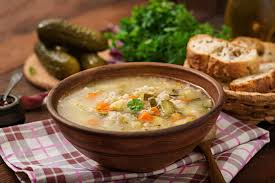

Caldo de mandioca
Que tal fazer um caldo de mandioca para o jantar? Ao contrário do que dizem por aí, sopas e caldos são janta, sim! Muito populares nos dias mais frios, os caldos podem ser tão satisfatórios quanto qualquer outro alimento.
Tempo de preparo: 60 minutos
Postada dia:05/03/25
Categoria: Sopas